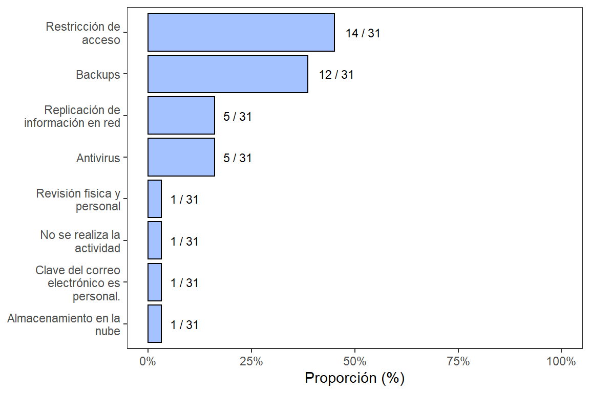
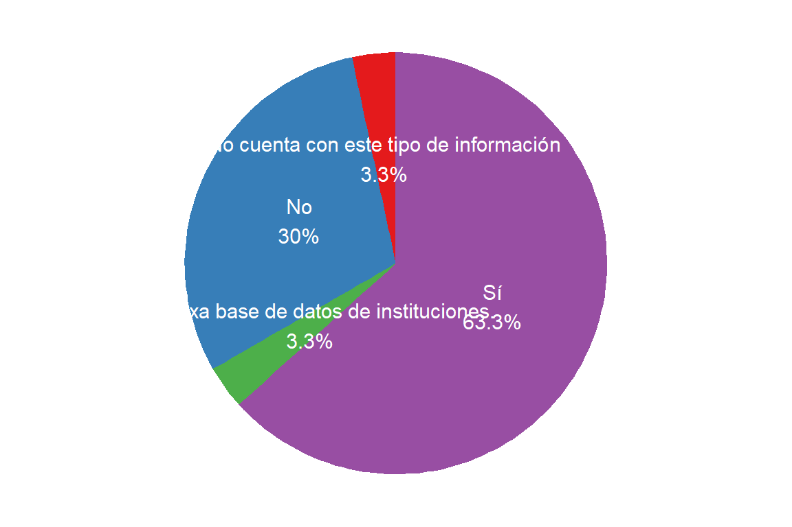

7.3 Control de la información
7.3.1 Seguridad de la información
La seguridad de la información que manejan los FRE a nivel nacional, es un tema de alta importancia a nivel interno, ya que comprende las medidas preventivas de la institución u organización, que permiten resguardar y proteger la información por medio de sistemas tecnológicos, buscando mantener la confidencialidad, disponibilidad e integridad de los datos. Adicionalmente, se debe contemplar que todos los FRE deben ser capaces de resguardar y proteger la información proveniente de todo el departamento, lo cual dispone un reto mayor referente a la seguridad de la información.
La Figura 7.7 muestra la manera como se garantiza la seguridad de la información en los FRE departamentales. A partir de los datos de la figura, se puede evidenciar que medios emplea el personal del FRE para resguardar y proteger la información por medio de sistemas tecnológicos. La restricción de acceso es el principal recurso que tienen los FRE para mantener la confidencialidad, disponibilidad e integridad de los datos.
Figura 7.7: Medidas para garantizar la seguridad de la información
Cabe resaltar que en la Figura 7.7 cuándo se habla de restricción de acceso, se refiere al restringido acceso que se tiene a estos informes, aunque particularmente algunos FRE cómo La Guajira, si tienen una restricción de acceso a los informes presentados, por medio de contraseñas y bloqueo de columnas. En general una gran parte de los FRE maneja bases de datos combinadas (Bitácoras manuales y hojas de cálculo) para el manejo de Recetarios Oficiales y MME. Esto causa una trazabilidad fragmentada en la información del FRE, además de un re-proceso que tiene que asumir el personal del FRE, relacionado con la transcripción a medios digitales, contemplando los errores humanos de digitación.
7.3.2 Bases de datos
En la Figura 7.8 se muestra la proporción de FRE que cuentan con bases de datos de información de inscritos y pacientes a los cuales se les dispensa MME.
Figura 7.8: Proporción de FRE que cuenta con: (A) bases de datos con información de inscritos, o (B) bases de datos con información de pacientes a los que se les dispensa MME.
